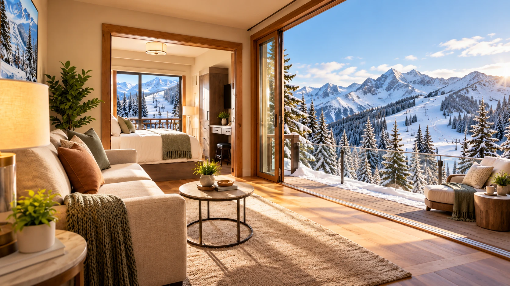
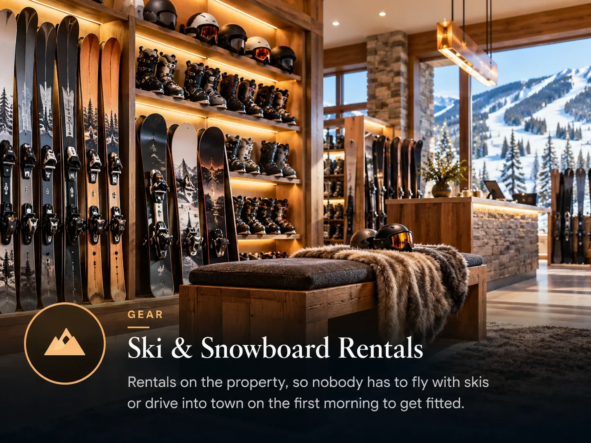

No authority defines ski-in ski-out, nobody audits the claim, and it appears on listings that are a genuine ten minute walk from a lift. Here is how to find out what you are actually booking.

The phrase is doing a lot of work on rental listings, and it is doing it without any rules. A property can call itself ski-in ski-out because a run passes within sight of the building. It can also mean the thing you hoped for, which is clicking out of your bindings at the door.
In a resort the size of Park City the difference between those two is a week of small irritations, multiplied by however many children you brought.
The three things it usually means
True ski-in ski-out
A run or a ski path reaches the building. You walk out in boots, click in, and go. At the end of the day you ski back to the same door. This is rarer and more expensive than listing copy suggests.
Ski-in, walk-out
You can ski back to the building at the end of the day, because gravity cooperates, but in the morning you walk to a lift. In a compact village this is fine. The walk is the number that matters.
Walk to the lift
There is no ski access to the door at all, but a lift is close enough that the listing decided the phrase applied. Sometimes this is a two minute walk and perfectly reasonable. Sometimes it is across a road and a car park.

The four questions that settle it
- Which lift do I walk to, by name? An owner who has skied from the place answers instantly. Vagueness here is the answer.
- How long is that walk, in boots, carrying skis? Ask for minutes rather than distance. A flat two minutes and an uphill two minutes are different things.
- Where do the skis and boots live overnight? Ski storage at the base of the lift changes every morning of the week. Without it you are carrying everything through a lobby twice a day.
- Can I ski back to the building at the end of the day? This is a separate question from the morning one, and the answers are often different.
Open a map, find the building, and find the lift. If the listing will not tell you the building, that is information too. Anyone renting a genuinely ski-in unit is happy to say exactly where it is.
Why it matters more with children
An adult can carry skis for ten minutes without much thought. A six year old in ski boots cannot, and will tell you about it. The walk is also the thing that decides whether anyone goes back to the unit at lunch, and going back at lunch is what keeps a family skiing on day five.
This is the single biggest argument for staying in Canyons Village rather than in town, and it is worth more than the nightly rate difference for most families.
Common questions
Is ski-in ski-out a regulated term?
No. There is no official definition and no body that checks the claim, so it appears on listings with very different levels of access. The only reliable method is asking which lift you walk to and how long the walk takes.
Is Westgate Park City ski-in ski-out?
Westgate sits in Canyons Village, built around the Red Pine Gondola, so the walk to the lift is short from the village buildings. As with any large resort, the exact walk depends on which building the unit is in, so ask.
Does ski-in ski-out cost much more?
Usually yes, and during peak weeks the gap widens because the supply is fixed. Whether it is worth it depends mostly on how many small children are in the group.
The villa this guide comes from
We own a Premier Two-Bedroom Villa inside Westgate Park City Resort, in Canyons Village. It is 1,100 square feet, two king bedrooms and two queen sleeper sofas, so it sleeps eight in one unit. Full kitchen with a centre island, two bathrooms, in-unit laundry, and a short walk to the Red Pine Gondola.
It is available for Presidents' Week 2027, 13 to 20 February, and we rent it ourselves rather than through an agency.